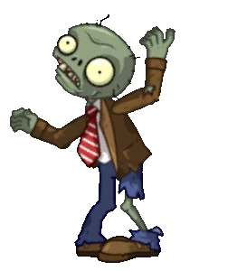

О приложении
Наше приложение "Task-Manager для зомби" предназначено для упрощения управления задачами для пользователей, любящих организованность и эффективность. С его помощью вы сможете:
- Создавать и редактировать задачи.
- Перетаскивать задачи между разными статусами.
- Отслеживать прогресс выполнения.
- Сохранять ваши задачи локально.
Приложение простое в использовании и доступно на всех устройствах.
